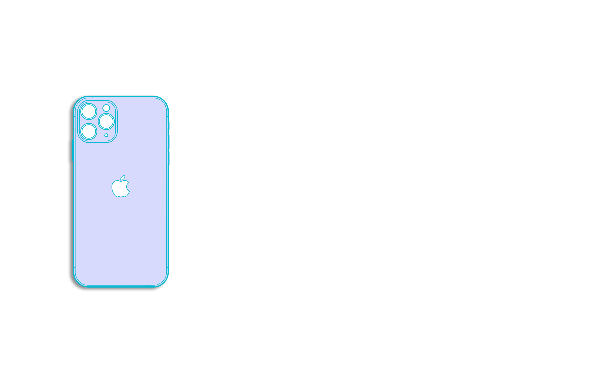

Phonefixbay
☰
Phones
Apple
Samsung
Huawei
iPads
Tips
Phones
Apple
Samsung
Huawei
iPads
Tips

Touch-ID of tablet
(Don't mess this up)
1. Heat
2. Remove the metallic part first from both ends.
3. When the device is really warm, start to slowly pull the touch-ID cable from the connector
end. Just a tad too much strenght and it'll tear. The idea is to have it so warm that just with a
slightest pressure it'll come off.
4. Push the button part "in" with your finger and it'll unattach.
5. Clean all glues from the metallic part.
6. Replace the glues with a good tape. For example cut perfect squares from the iPad display
tape-set
7. Install the button to the new display/screen. Attach the metallic part to the right place.
8. Test the button and that it clicks and sticks properly.
a library of solutions,
for tricky situations,
to (maybe) get stuff working.